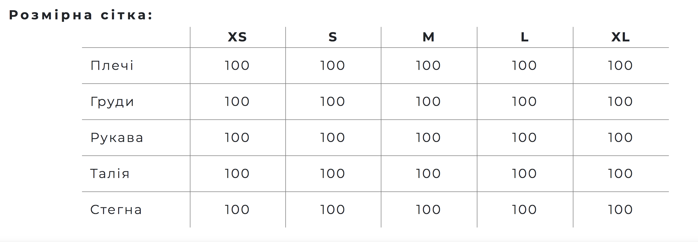
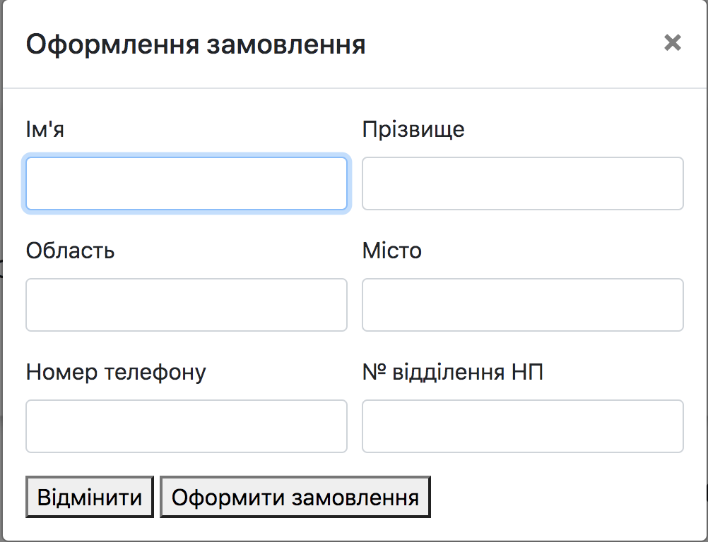

Тема: СТРУКТУРА HTML-ДОКУМЕНТА. ВИБІР ПРЕДМЕТНОГО ГАЛУЗІ.
РОБОТА З ПОСИЛАННЯМИ, ТАБЛИЦЯМИ, ЗОБРАЖЕННЯМИ, ФОРМАМИ в ТА ІНШИМИ ЕЛЕМЕНТАМИ HTML-ДОКУМЕНТІВ
Мета: придбати практичні навички роботи з html-документом, таблицями,формами, зображеннями, посиланнями
ХІД ВИКОНАННЯ РОБОТИ
- Підготувати шаблон майбутнього звітного HTML-документу на 9 лабораторних робіт та розмістити у папці на
Гугл-Диску. Результати виконання кожної нової лабораторної роботи будуть добавлятись у цей
HTML-документ.
- На свій розсуд вибрати любу предметну галузь і виконати опис цієї галузі, а саме: опис бізнес-логіки
системи
(функціонал майбутньої програми) , сценарій, об’екти взаимодії. Опис предметної області розмістити у
звітному
HTML-документі.
- Вибрати на свій розсуд середовище розробки майбутнього сайту. Написати в ньому HTML-коди головної
сторінки та
інших WEB-сторінок сайту (застосунку), на яких розмістити на свій розсуд наступні елементи:
посилання на будь-яку WE B-сторінку;
- таблицю;
- форму;
- зображеня (або декілька зображень);
- заголовки;
- інші елементи HTML-документу ( за бажанням)
- Запустити даний документ у любому браузері для перевірки виведення елементів WEB-сайту (іноді його
будемо
називати просто HTML-документ, який буде містити визначену кількість WEB-сторінок).
- У звітному HTML-документі розмістити результати виконання лабораторної роботи №1 ( див. Додаток1), а
саме:
- Тема та постановка задачі лабораторної роботи №1;
- Середовище розробки сайту. Місце розташування сайту;
- Зовнішний вигляд сайту. НТМL-коди файлів.
- HTML-код ТАБЛИЦЬ – скриншот результатувиведення таблиці ;
- HTML-код ФОРМИ;
- HTML-код ЗОБРАЖЕННЯ;
- Використана література, сайти, при виконанні лабораторної роботи №1;
- ВИСНОВКИ.
Середовище розробки сайту. Місце розміщення сайту.
Для створення WEB-сайту я обрала середовище розробки Visual Studio Code.
Для контролю версій при розробці буде використано GitHub. Для доступу до коду можна скористатись посиланням
WEB-сайт буде розміщений у мережі на GitHub Pages. Для доступу до сайту можна скористатись посиланням
HTML-код ТАБЛИЦЬ – скриншот результату виведення таблиці
<h5>Розмірна сітка:</h5>
<table rules="all">
<tr>
<th></th>
<th>XS</th>
<th>S</th>
<th>M</th>
<th>L</th>
<th>XL</th>
</tr>
<tr>
<td class="head">Плечі</td>
<td>100</td>
<td>100</td>
<td>100</td>
<td>100</td>
<td>100</td>
</tr>
<tr>
<td class="head">Груди</td>
<td>100</td>
<td>100</td>
<td>100</td>
<td>100</td>
<td>100</td>
</tr>
<tr>
<td class="head">Рукава</td>
<td>100</td>
<td>100</td>
<td>100</td>
<td>100</td>
<td>100</td>
</tr>
<tr>
<td class="head">Талія</td>
<td>100</td>
<td>100</td>
<td>100</td>
<td>100</td>
<td>100</td>
</tr>
<tr>
<td class="head">Стегна</td>
<td>100</td>
<td>100</td>
<td>100</td>
<td>100</td>
<td>100</td>
</tr>
</table>

HTML-код ФОРМИ
<form>
<div class="form-row">
<div class="col-md-6 mb-3">
<label>Ім'я</label>
<input type="text" class="form-control" id="name" value="" required>
</div>
<div class="col-md-6 mb-3">
<label>Прізвище</label>
<input type="text" class="form-control" id="surname" value="" required>
</div>
</div>
<div class="form-row">
<div class="col-md-6 mb-3">
<label>Область</label>
<input type="text" class="form-control" id="oblast" required>
</div>
<div class="col-md-6 mb-3">
<label>Місто</label>
<input type="text" class="form-control" id="city" required>
</div>
</div>
<div class="form-row">
<div class="col-md-6 mb-3">
<label>Номер телефону</label>
<input type="text" class="form-control" id="phone" required>
</div>
<div class="col-md-6 mb-3">
<label>№ відділення НП</label>
<input type="text" class="form-control" id="NPnumber" required>
</div>
</div>
<button type="button" data-dismiss="modal">Відмінити</button>
<button type="submit">Оформити замовлення
</form>
</form>

HTML-код ЗОБРАЖЕННЯ
<div id="baner">
<img src="https://minimal.com.ua/wp-content/uploads/2020/08/RD-11.jpg" />
</div>
ВИСНОВКИ
У рамках даної лабараторної я ознайомилась із структурою HTML-документа. Ці знання я застосувала при створенні власного WEB-додатку.
Перед створенням WEB-додатку мною була досліджена предметна область та описані функціональні та нефункціональні вимоги. Розроблена Use Case діаграма. Це допомогло у розумінні, як повинна бути побудована структура WEB-додатку.
Була проведена практична робота із посиланнями, таблицями, зображеннями, формами та іншими елементами HTML-сторінки. Також для зручності мною була використана бібліотека Bootstrap, що значно пришвидшило розробку.
У результаті було розроблено прототип WEB-додатку, який стане основою для подальшого розширення функціоналу.
Опис предметної області
Функціональні вимоги:
- Користувач повинен мати можливість пошуку необхідного товару у каталозі
- Користувач повинен мати можливість переглядати товари певної категорії
- Користувач повинен мати можливість дізнатись деталі певного товару
- Користувач повинен мати можливіть обрати характеристики товару перед тим, як додати його у кошик
- Користувач повинен мати можливість додати певну кількість товару в кошик
- Користувач повинен мати можливість переглянути вміст кошика
- Користувач повинен мати можливість оформити замовлення із товарами у кошику
- Адміністратор повинен отримати повідомлення про створення нового замовлення
Нефункціональні вимоги:
- WEB-додаток повинен бути розміщений у мережі
- WEB-додаток повинен підтримувати 50 користувачів одночасно
- WEB-додаток повинен зберігати товари у кошику під час сесії
- WEB-додаток повинен працювати із затримкою меншою за 1s
- WEB-додаток повинен коректно відображатись у більшості браузерів